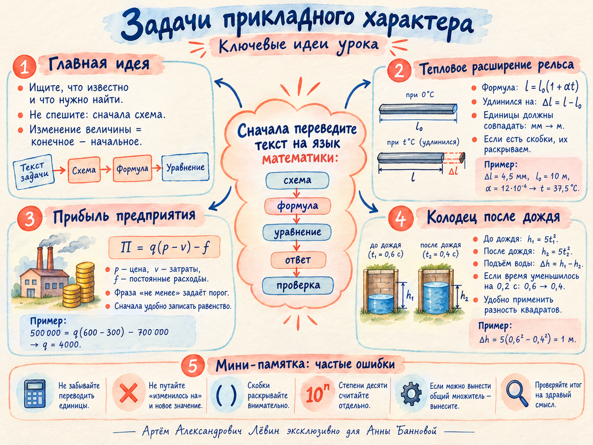

Рельс длиной 8 м при 0 °C имеет коэффициент α = 2 · 10⁻⁵ °C⁻¹. При какой температуре он удлинится на 3,2 мм?
Показать ответ
20 °C
Тепловое расширение рельса, прибыль предприятия и колодец после дождя: за разными сюжетами скрывается один навык — перевод условия в математическую модель.
Текст → схема → формула → вычисление
Слова «удлинился», «уменьшилось на», «поднялся» описывают разность двух состояний. Её лучше изобразить, а затем записать формулой.
При увеличении величины: новое значение минус старое. При уменьшении искомая величина уменьшения: старое минус новое.
Если начальная длина указана в метрах, миллиметры переводим в метры ещё до подстановки.
1,2 · 10⁻⁵ = 12 · 10⁻⁶. Коэффициенты и степени десяти удобно считать отдельно.
Из формулы длины выделяем разность l − l₀. Это известные 4,5 мм, которые переводим в метры.
Что ищем: температуру, при которой получено заданное удлинение.
Прибыль при выпуске q единиц должна быть не меньше заданной. Если вычисленный порог дробный, округляем выпуск вверх.
Что ищем: наименьшее целое количество единиц продукции.
После дождя вода ближе к краю колодца. Камень летит меньшее время, значит, разность прежнего и нового пути положительна.
Что ищем: насколько повысился уровень воды.
Длина при температуре T определяется начальной длиной l₀ и коэффициентом расширения α.
Пример. l₀ = 10 м; α = 1,2 · 10⁻⁵ °C⁻¹; Δl = 4,5 мм = 0,0045 м.
При раскрытии скобок внешний множитель умножает каждое слагаемое один раз: a(b + c) = ab + ac. Выражение αT внутри скобок выступает единым слагаемым.
Цена продажи, переменные затраты на единицу и постоянные расходы определяют месячную прибыль.
Обозначения: q — количество единиц; p — цена одной единицы; v — переменные затраты на единицу; f — постоянные расходы.
Пример. p = 600 руб.; v = 300 руб.; f = 700 000 руб.; A = 500 000 руб.
Ответ: минимально 4000 единиц.
«Не менее 500 тысяч» означает ≥ 500 000. Чтобы найти нижнюю границу, удобно решить соответствующее равенство; затем проверить направление неравенства.
Если выпуск измеряется целыми единицами, а порог получился дробным, берите ближайшее целое сверху.
Формула для минимального выпуска применена при p > v. Тогда прибыль возрастает вместе с выпуском.
После подъёма уровня воды расстояние от края колодца до поверхности уменьшается. Это видно по сокращению времени падения камня.
До дождя камень падал t₁ = 0,6 с. После дождя время стало меньше на 0,2 с: t₂ = 0,4 с.
Ответ: вода поднялась на 1 метр.
Сначала можно вынести общий множитель 5, затем применить формулу a² − b² = (a − b)(a + b).
Путь А: три задачи на расширение, три на прибыль и четыре на подъём воды. Условия и ответы соответствуют чек-листу от 26 октября.
Рельс длиной 8 м при 0 °C имеет коэффициент α = 2 · 10⁻⁵ °C⁻¹. При какой температуре он удлинится на 3,2 мм?
Рельс длиной 12 м при 0 °C: α = 1,5 · 10⁻⁵ °C⁻¹. При какой температуре его длина увеличится на 5,4 мм?
Рельс длиной 15 м при 0 °C: α = 1,2 · 10⁻⁵ °C⁻¹. На сколько миллиметров он удлинится при нагревании до 40 °C?
Цена 800 руб., затраты на единицу 500 руб., постоянные расходы 450 000 руб. Найдите наименьший выпуск для прибыли не менее 750 000 руб.
Цена 950 руб., затраты на единицу 650 руб., постоянные расходы 360 000 руб. Найдите минимальный выпуск для прибыли не менее 840 000 руб.
Цена 410 руб., затраты на единицу 260 руб., постоянные расходы 210 000 руб. Найдите наименьший целый выпуск для прибыли не менее 500 000 руб.
Камень до дождя падал до воды 0,8 с. После дождя время уменьшилось на 0,2 с. На сколько метров поднялась вода? h = 5t².
До дождя камень падал до воды 1,0 с, после дождя — на 0,4 с меньше. На сколько метров поднялась вода? h = 5t².
До дождя время падения составляло 0,9 с, после дождя уменьшилось на 0,3 с. Найдите подъём воды, если h = 5t².
До дождя время падения было 1,2 с. После подъёма воды оно стало меньше на 0,25 с. На сколько метров поднялась вода? h = 5t².
Полный чек-лист для печати и акварельная памятка, объединяющая три рассмотренные модели.
PDF содержит теорию, три подробно разобранных примера, алгоритм решения и задания Путь А с ответами.
